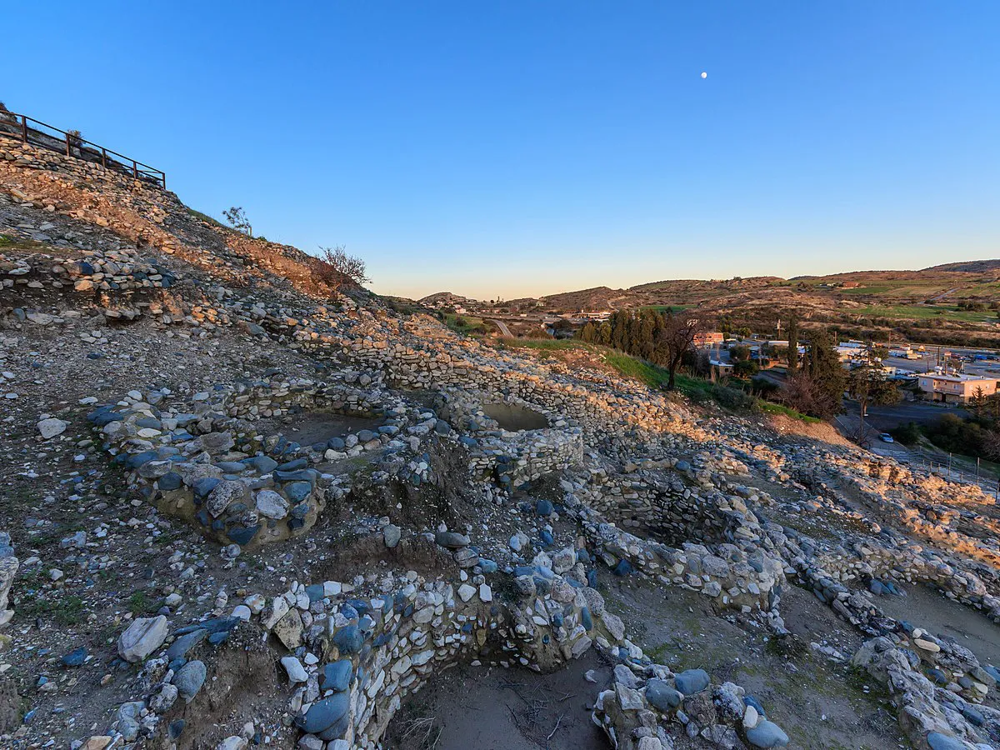
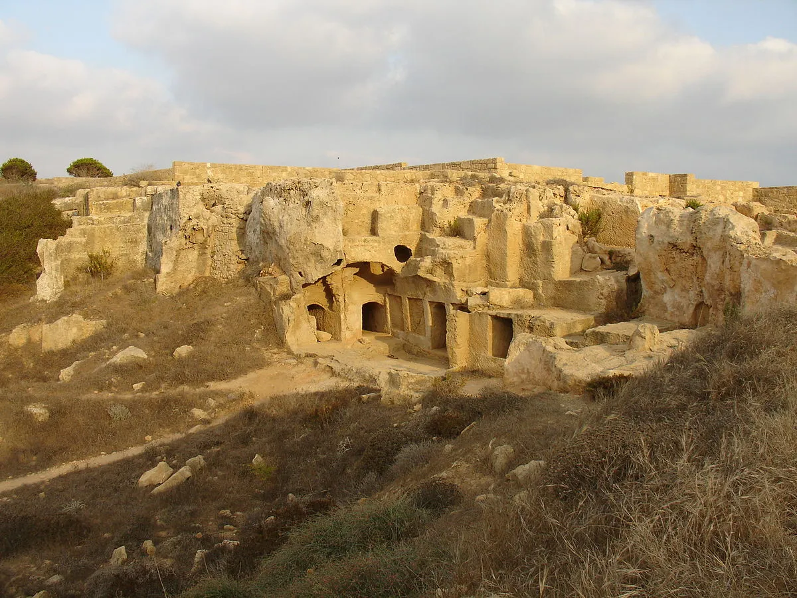
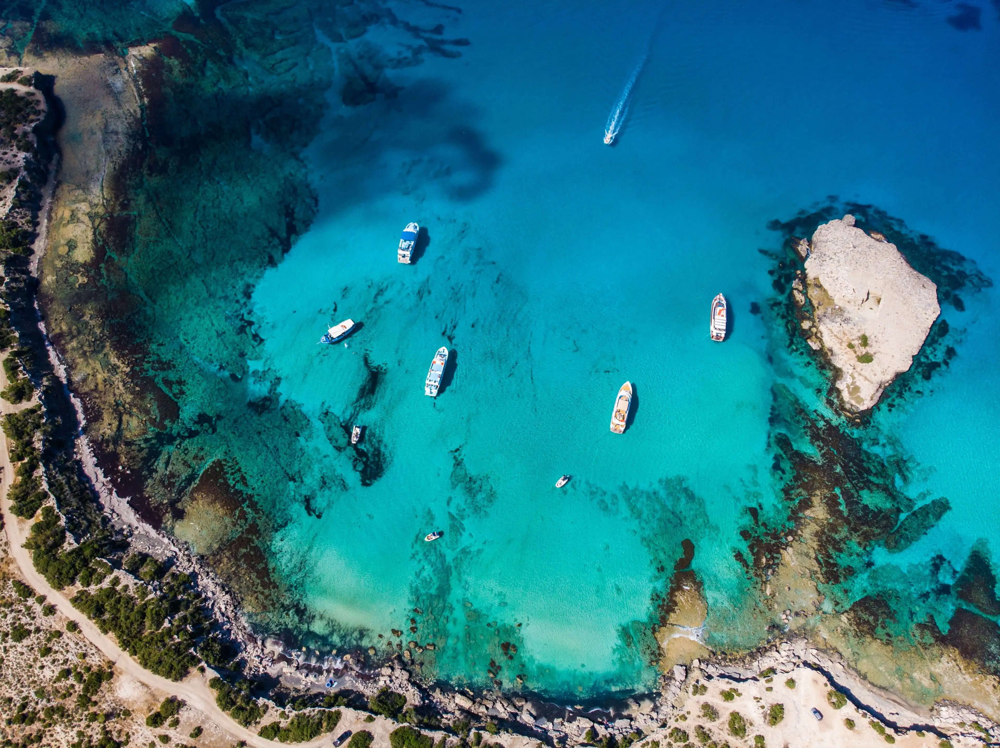
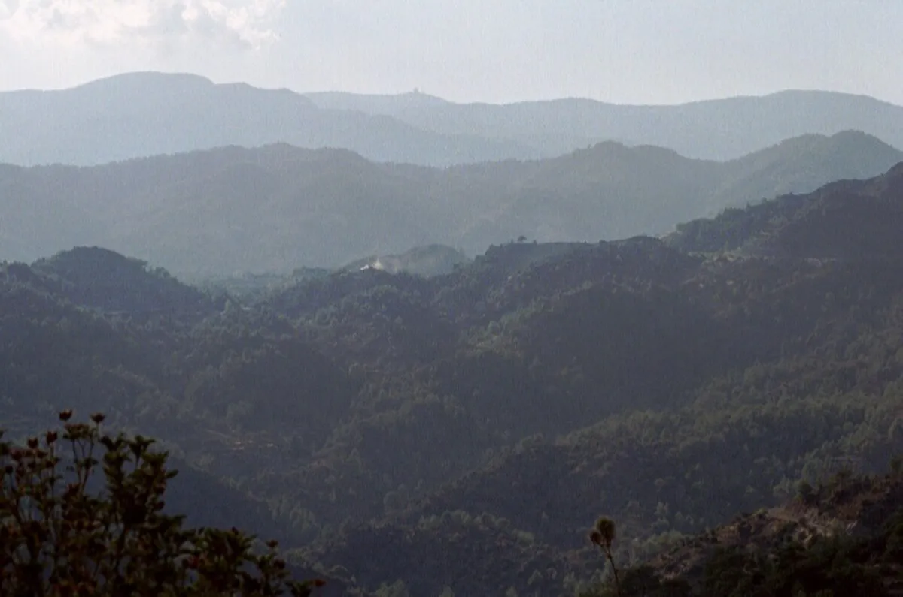
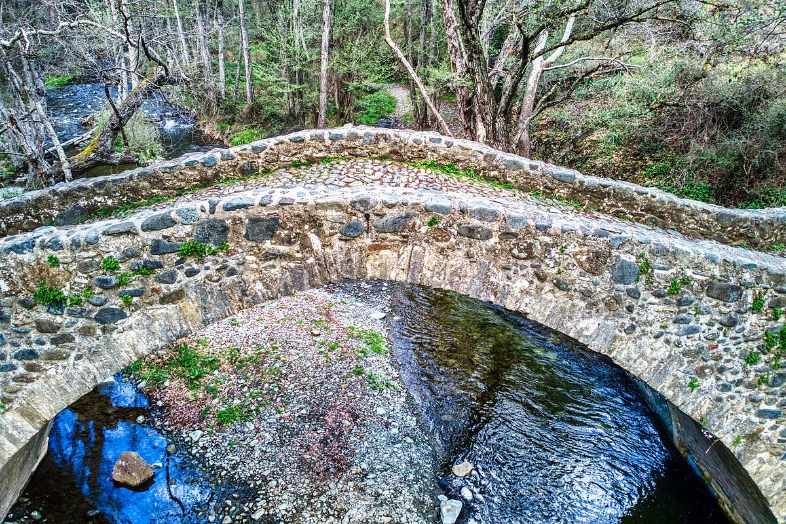
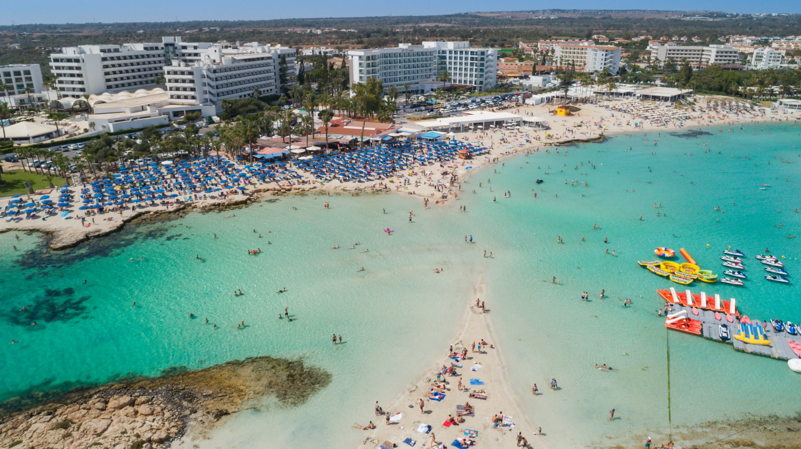

Cyprus is hard to fit neatly into a postcard. It is one of the oldest continuously inhabited places on Earth, the mythological birthplace of Aphrodite, and a meeting point of three continents.
9,000 years of history

At Khirokitia, about 40 minutes from Larnaca, you can walk through a Neolithic settlement that was founded around 7,000 BC. To put that in perspective: these circular stone houses were already ancient ruins by the time anyone thought to build Stonehenge or the Pyramids. Reconstructed dwellings let you step inside and see how people actually lived nine millennia ago.
Where the heroes of the Iliad started over

After the fall of Troy, the heroes of the Iliad scattered across the Mediterranean, and an unusual number of them ended up in Cyprus. Teucer, the great archer who fought alongside his half-brother Ajax, was banished by his own father for failing to bring Ajax's body home. He sailed to Cyprus and founded the city of Salamis on the eastern coast, naming it after the island he could never return to. Agapenor, leader of the Arcadian forces at Troy, was blown off course by a storm and landed on the western shore, where he founded Paphos and built the sanctuary of Aphrodite.
Legend says that Aphrodite herself was born from the sea foam at Petra tou Romiou in Paphos. The Sanctuary of Aphrodite, built by the Mycenaeans in the 12th century BC, drew pilgrims from across the ancient world for over a thousand years until a Roman emperor shut it down in 391 AD.
At the Tombs of the Kings in Paphos, a vast underground necropolis carved directly into the rock, the island's elite were buried from the 4th century BC in chambers designed to look like actual houses, with columns and frescoed interiors. You can climb down into them. The Roman villa mosaics at Kato Paphos depict mythological scenes in remarkable detail.
The Akamas Peninsula

The Akamas Peninsula, on the island's northwest tip, is one of the last unspoiled natural regions in the Mediterranean. There are no paved roads through its interior. Over 600 plant species thrive here, including dozens that are endemic to Cyprus and grow nowhere else on Earth (among them the Akamas tulip, whose entire known world population consists of roughly 200 plants). It is home to sea turtles, griffon vultures, fruit bats in limestone caves (famously filmed by David Attenborough), and a landscape that shifts from sandy coves to pine forests to mountain scrub within a few kilometers.
The Avakas Gorge, on the southern edge of the peninsula, is a canyon carved through limestone over millions of years by the Avgas River. The walls rise up to 30 meters and narrow to just 2 or 3 meters at the tightest point, with a massive boulder suspended between the cliffs above you.
And the Blue Lagoon at Akamas is exactly as beautiful as every photo you will find on Google.
A piece of the ocean floor, 2,000 meters in the air

Aristotelis became obsessed with rocks after a geology course.
The Troodos mountain range in the center of the island is a beautiful scenery. Few people know that it is a piece of the ocean floor. Geologists call it an ophiolite: a fragment of oceanic crust and upper mantle that formed 92 million years ago at the bottom of the ancient Tethys Ocean, then was pushed upward by the collision of the African and Eurasian plates until it became the spine of Cyprus.
It is considered the most complete and best-preserved ophiolite sequence in the world. You can literally walk from rocks that were once the Earth's upper mantle to what was once the ocean floor, all on hiking trails. The Troodos Geopark covers over 1,100 square kilometers with 38 geosites and 84 trails. The visitor center, housed in a restored early 20th-century school at the site of a rehabilitated asbestos mine, is one of the best small geology museums anywhere.
The region is also home to one of the largest concentrations of Byzantine churches and monasteries outside of Greece, and produces Commandaria, a rich-tasting red wine widely regarded as the oldest continuously produced wine in the Mediterranean.
Abandoned mines and blood-red lakes

The word "copper" comes from Cyprus. The Latin cuprum derives from aes Cyprium, "metal of Cyprus," and the island supplied nearly all of the Roman Empire's copper at the height of its power. Mining eventually collapsed, lay dormant for centuries, was revived by the British, and then collapsed again.
What remains are surreal hiking landscapes. Near the village of Mitsero, about 30 minutes from Nicosia, abandoned open-pit copper mines have filled with groundwater that turned deep, vivid red from the concentration of heavy metals left behind. The locals call it the Red Lake. Its color shifts with the seasons and even the time of day. You cannot swim in it (the water is toxic). Nearby, the Kokkinogia mine still has its rusting machinery and a horizontal tunnel you can peer into. Further along the same route, the mines around Mathiatis and the village of Sha offer more colored lakes and gossan rock formations in yellow, brown, and orange. All part of the Troodos Geopark.
Stone bridges, ancient churches, and things you find by accident

Deep in the Paphos Forest, the Tzelefos Bridge is a single-arched Venetian stone bridge from the 16th century, the largest on the island, once part of the camel road network built to carry copper from the Troodos mines to the sea. Its humpback design let camels cross over it when the rivers ran high and walk under it through the dry riverbed in summer. There are 27 Venetian bridges designated as ancient monuments across Cyprus, and you can hike a trail connecting three of them through the forest.
In Larnaca, the Church of Saint Lazarus was built in the 9th century directly over the tomb of the biblical Lazarus, who (according to Orthodox tradition) fled to Cyprus after being raised from the dead, became the city's first bishop, and lived another 30 years. You can walk down into the crypt and see the empty sarcophagus. Near Kiti, the Angeloktisti Church (its name means "built by angels") preserves a 6th-century mosaic of the Virgin and Child that rivals anything in Ravenna. Mosaics from this period exist in only two places on Earth: here and Mount Sinai.
But beyond the headline sites, small Byzantine and medieval chapels are scattered across the island, tucked into valleys, perched on hillsides, hiding inside villages. Ten of the painted churches in Troodos are collectively UNESCO World Heritage listed, with elaborate murals inside modest, barn-roofed exteriors that were built to be inconspicuous. There are many more that aren't in any guidebook. You just find them.
The crossroads of everything

Cyprus sits closer to Beirut than to Athens, closer to Damascus than to Rome. For most of recorded history, this positioning made it one of the most strategically contested pieces of land on Earth, and everyone who ever built an empire in this part of the world eventually wanted it.
The list of rulers reads like a graduate seminar syllabus: Mycenaean Greeks, Assyrians, Egyptians, Persians, Alexander the Great, the Ptolemaic dynasty, the Roman Empire, the Byzantines, Richard the Lionheart (who conquered it on his way to the Third Crusade and then sold it), the Lusignan dynasty, the Venetians, the Ottoman Empire, and the British. Each of them left something behind, and you can see most of it.
Nicosia, the capital, has been continuously inhabited for over 5,500 years and is the last divided capital in the world. In 1963, a British general drew a line across the city with a green pencil to stop intercommunal fighting. In 1974, following a Greek-backed coup and a Turkish military response, that line became a UN-controlled buffer zone stretching 180 kilometers across the entire island. The old city, enclosed within 16th-century Venetian walls, is still split. You can walk through a checkpoint on Ledra Street, show your passport twice within 15 meters, and cross from the Republic of Cyprus into Northern Cyprus. On one side, signs are in Greek. On the other, Turkish. Between them, a narrow strip of crumbling buildings, barbed wire, and UN observation posts.
Nicosia is also full of cafes, street art, and the kind of layered character that only comes from absorbing dozens of civilizations.
Diving a top-ten wreck

If you are a diver (or have ever been curious about it), Cyprus has one of the longest diving seasons in the Mediterranean, stretching from March through November.
The Zenobia is a 172-meter Swedish ferry that sank off Larnaca in 1980 on its maiden voyage, taking over 100 trucks with it. It now rests on its side at 42 meters depth. You can still see the trucks chained inside the cargo decks, the massive propellers, the bridge, even the cafeteria with its coffee machine still attached to the bar. Marine life has turned the wreck into a thriving reef: barracuda, grouper, loggerhead turtles, and lionfish are all regulars.
The beaches

Nissi Beach in Ayia Napa is the one you have probably seen in photos: white sand, shallow turquoise water, and a small natural bridge connecting to a tiny island you can wade to. Fig Tree Bay in Protaras regularly appears on lists of Europe's best beaches. And Lara Bay, tucked inside the Akamas Peninsula, is a protected turtle nesting beach that feels untouched.
The food

We will let you discover this one for yourselves. But if you leave Cyprus without having had a proper meze (think 15 to 25 small dishes served one after another), fresh halloumi that was made that morning, slow-cooked kleftiko lamb, and loukoumades drizzled with honey, Aristotelis will take it personally.